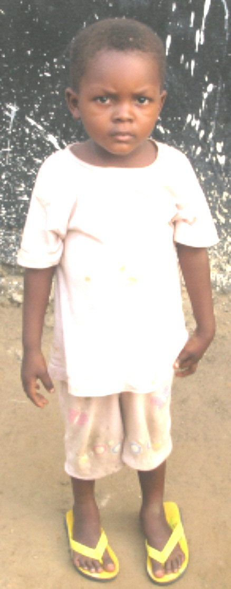
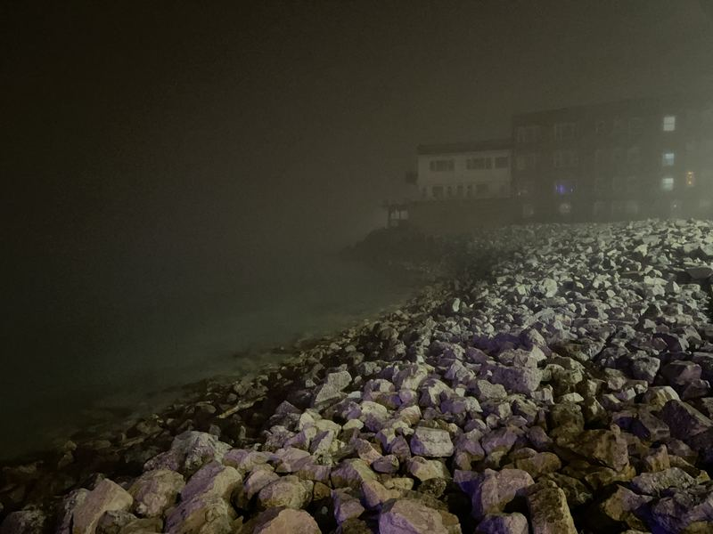

Where I Began
Liberia
I was born in a small village in Liberia, toward the end of the Second Liberian Civil War. For a young child, the village seemed peaceful.
Each morning I would bathe with a large oval-shaped bowl and then walk into the forest to a stream where I spent hours catching minnows with my bare hands. In the evenings the men would return from hunting. Once they came back carrying an enormous python, and the women cut it up for a stew in a large pot with spices I could not name.

I moved to the United States as a young child, settling first with my adoptive family in Kentucky before eventually reaching Chicago. At Dartmouth, I studied Economics and Public Policy, drawn to the ways quantitative methods could be applied to questions about how people make decisions under constraint.
My first research project examined the impact of violence on educational attainment for children in Nigeria. The work sharpened my interest in microeconomics and in the tools economists use to measure harm. For my honors thesis, I turned to Tanzania and a question about what happens to school enrollment when the price of gold rises. Using three rounds of the Tanzanian National Panel Survey and a difference-in-differences strategy, I compared households that varied in their proximity to artisanal and industrial gold mines. I found that a sixty-two percent increase in the price of gold led to an 18.6 percentage point decline in enrollment among individuals fourteen to seventeen years old living within thirty kilometers of an artisanal mine. Household wealth increased at the same time. The opportunity cost of schooling, it turns out, rises with the price of gold.
The circumstances of a person's early life, and the economic environment surrounding them, shape outcomes in ways that are difficult to reverse once they take hold.
Work & Study
Now
EC*REACH · Research Analyst
At the Early Childhood Research Alliance of Chicago, I work with city agencies to clean, organize, and analyze administrative data on early childhood education. I led a project to unduplicate children across seven administrative databases using probabilistic matching techniques and have contributed to several papers evaluating Chicago's Universal Pre-K program.
Northwestern University
Master's in Statistics and Data Science (current).
Before
Nuveen · Municipal Bonds Analyst
I focused on general obligation bonds, charter school bonds, and multi-family housing projects. The role gave me a view into how capital markets interact with the communities around them.
Dartmouth College
Economics with high honors, minor in Public Policy.
Through My Lens
Moments captured in Alaska, the national parks, coastal Maine and closer to home.